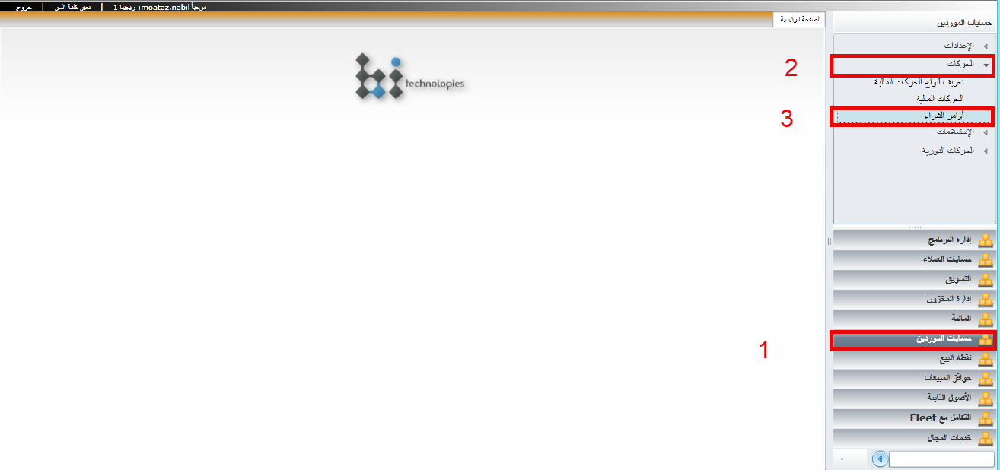
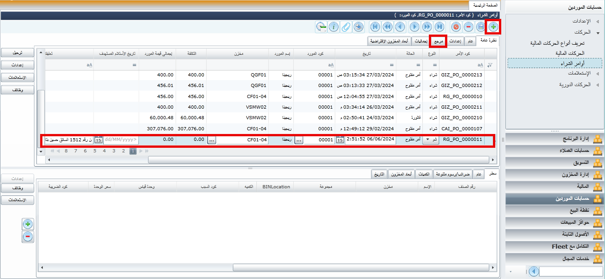
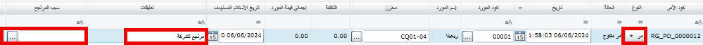
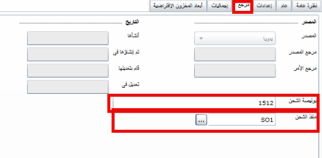
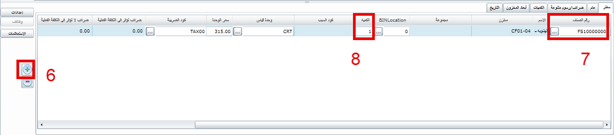
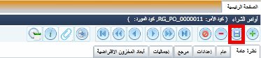
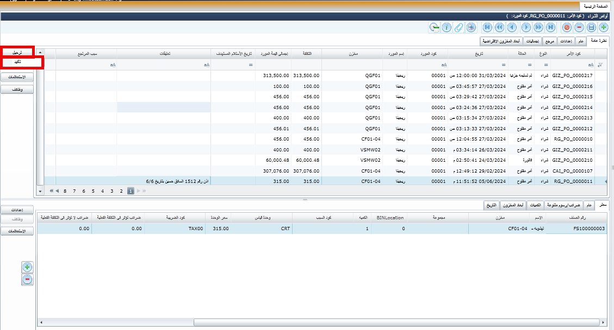
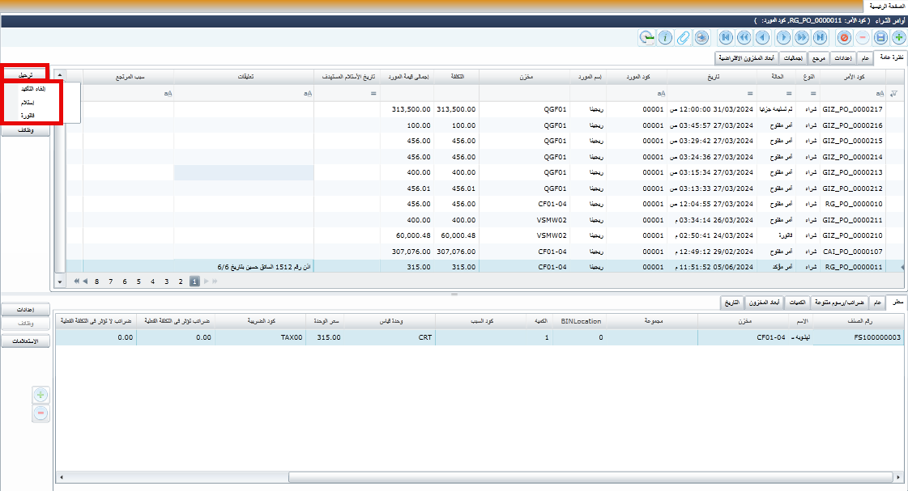
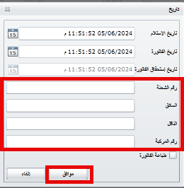

- يتم الذهاب الى
القائمة الرئيسية حسابات الموردين
- فى الاعلى يتم فتح الحركات عن طريق الضغط على السهم
الموجود على اليمين
- الضغط على أوامر الشراء

- يتم اضافة سطر جديد وكتابة تاريخ الوارد و كود المورد والمخزن وكتابة تعليق تفصيلي عن الوارد


في حال تم الشراء يتم اختيار امر شراء وفي حالة المرتجع يتم اختيار مردودات وباقي الخطوات كما هي
في حالة المردودات يتم اختبار سبب الارتجاع

- يتم الانتقال الى مرجع وكتابة رقم اذن الوارد واختيار شركة الشحن من منفذ الشحن

- يتم اضافة سطر جديد
- كتابة كود الصنف او اختيار الصنف من القائمة
- كتابة كمية الوارد من الصنف

يتم تكرار اضافة السطور حتى يتم اضافة جميع الاصناف الواردة بالإذن
- بعد الانتهاء من الصناف يتم الضغط على زر الحفظ في الأعلى

- يتم الضغط على زر الترحيل ثم تأكيد

يتحول امر الشراء من امر مفتوح الى أمر مؤكد في وضع امر مؤكد لا يتاثر المخزن بالحركة لكن لا تستطيع التعديل عليه الى بعد الغاء التاكيد
- يتم الضغط على زر ترحيل مرة أخرى واختيار فاتورة لاستلام الكميات بالكامل وتسجيل الحركة على في حساب المورد

- اخيرا تظهر شاشة يوضع بها بيانات الشحن كما هو موضح واضغط موافق للانتهاء

تم اخيرا الانتهاء من تسجيل امر الشراء وتم اضافة كمية الوراد الى المخزن الذي تم اختياره
تحول حالة أمر الشراء الى فاتورة